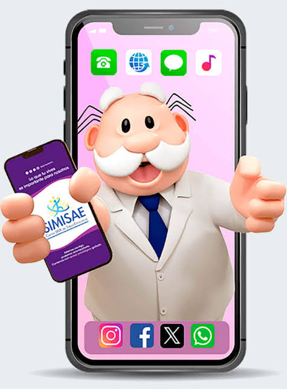
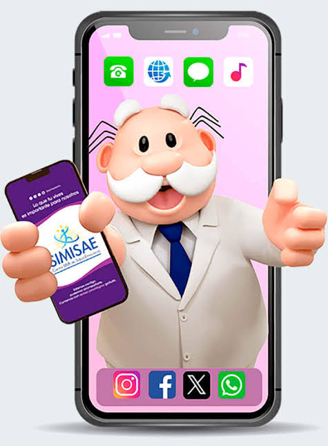
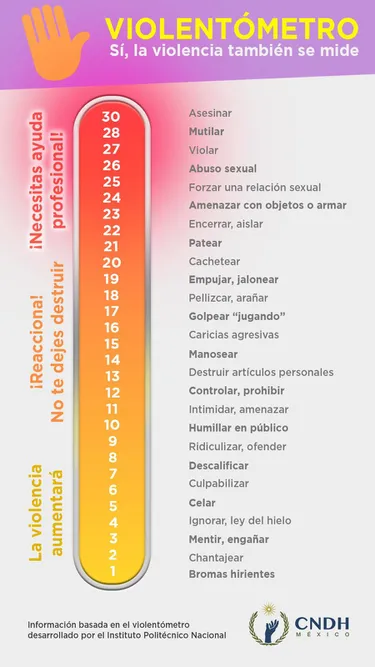

Cuida tu cuerpo
En memoria a una mujer sumamente especia que trascendió a otro mundo y otro espacio, pero que logró plasmar un gran poder digital al conectar con mucha gente y ser una gran motivacón e inpiración, un vínculo para repartir amor con su proyecto Teje un amigo México Una mujer maravillosa que hacia arte por todos lados "Atelier Tulipan".
Comer bien ayuda a tu cuerpo a tener un mejor rendimiento, te invito a visitar el canal de Kico Palomares.
Cuida tu mente
 

Cuida tu corazón
